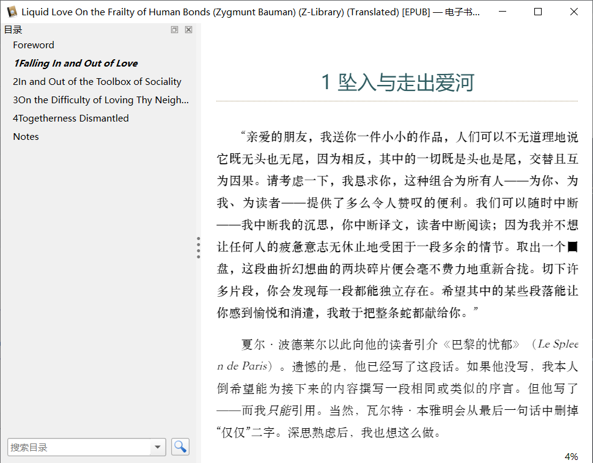
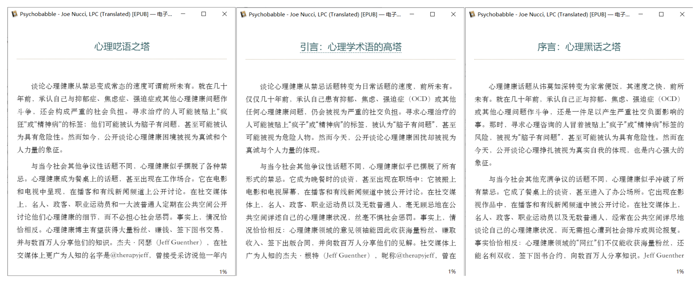

"Her skin recorded the cold just like a camera."
🐎 The Racetrack
🎧 Sound/Personal Experience
This (4'33") is a "sound" piece about pacing, tempo, and the fermata. During these 4 minutes and 33 seconds, the musicians sit quietly beside their unused instruments, and what you actually hear isn't silence, but the soundtrack of everyday life. You can hear people shifting in their seats, and the occasional cough. The sound of rain hitting the roof, or the noisy hum of a passing car. Wooden floors creaking, doors closing, lights buzzing. Your hearing becomes hyper-sensitive; even touching your own face creates noise—noise loud enough to bother the person sitting next to you.
— Will Gompertz, What Are You Looking At? 150 Years of Modern Art in the Blink of an Eye
Headphones create an illusion, tricking your senses into believing they are hearing every single detail of the music. Many artists adamantly refuse to use headphones in the recording studio because it's merely a degraded imitation of real-world auditory experiences. The sound emanating from speakers is far closer to the sound of an instrument being played in a room—immersing the listener in full-spectrum, three-dimensional vibrations.
— Rick Rubin, The Creative Act
Often, the only way to reclaim private acoustic space is to fill it with your own soundscape, using something like an MP3 player or a smartphone. Michael Bull, Professor of Media and Film at the University of Sussex, says: "The proliferation of the iPod can be simply understood as a delightful form of poisoning, where the user inhabits a world of 'total reconciliation'—a dream that has never been invaded. That is to say, the iPod is capable of simultaneously and directly intervening between the world and human emotion."
— Mike Goldsmith, Sound: A Very Short Introduction
📚 Chronicles of Bizarre Metaphors
Richard Brautigan Special Feature
Author Profile:
Richard Brautigan (1935–1984) was a profoundly unique American postmodernist writer and poet, often regarded as a crucial link between the Beat Generation and the hippie counterculture of the 1960s. Born into an impoverished family in Washington State, he endured a turbulent childhood before relocating to San Francisco in his youth. He skyrocketed to fame with the 1967 publication of Trout Fishing in America, cementing his status as a literary idol of the "Summer of Love." Brautigan's writing style is ethereal, absurd, and brimming with fragmented poetry. He excelled at using minimalist language to construct surreal metaphorical worlds, forging a distinctive "Brautigan-esque style" that profoundly influenced subsequent generations of writers (such as Haruki Murakami). However, as the countercultural tide receded, his reputation gradually waned in the late 1970s. His later years were mired in alcoholism and severe depression, culminating in his suicide by gunshot at his California home in 1984—leaving behind a legendary silhouette woven from brilliance, profound loneliness, and the shattered American Dream.
Style Commentary (via Gemini 3.0 Pro):
Brautigan's writing style is a bizarre hybridization of minimalism and surrealism, often described as an "effortlessly light nihilism." Rhetorically, he discards the logical chains of traditional realism, inventing the highly recognizable "Brautigan-esque metaphor": Rather than seeking superficial visual similarities, he relies on synesthesia and cognitive leaps, forcibly welding microscopic personal emotions to grandiose industrial, geographical, or historical imagery (such as likening "silence" to an "octopus," or "sex" to a "funeral"). This manufactures an anachronistic montage effect within the text. This style wraps a core of profound loneliness, death anxiety, and countercultural disillusionment in a childlike, transparently innocent tone. It's as if a child is intently playing with building blocks while watching the world collapse around him, radiating a fragile, tender poetry through absurd deadpan humor.
🔄 Scale Displacement
This type of metaphor magnifies minuscule things into grandiose geographical concepts, or transforms the human body into a landscape. This sense of displacement manufactures a psychedelic microcosm, effectively "mapping" intimate relationships or personal emotions.
It was a black cat, extending like a suburb from the city of her hair.
— Sombrero Fallout
Most of our lives are lived in the private sanctuary beneath our clothes, except in special cases like Vida's. Her body lived on the outside of her, presented for admiration like a lost continent. And her clothes were the dinosaurs she chose to inhabit this idyllic land.
— The Abortion: An Historical Romance 1966
"Five years," she repeated, as if it were the name of a country, and she was its president, the flowers growing in the candlelight of the hotel room were her cabinet, and I was the Secretary-General of the Library.
— The Abortion: An Historical Romance 1966
💭 Materialization of Abstract
Likening invisible sounds, dreams, and sacred concepts to concrete, even somewhat crude, everyday industrial goods, foods, or actions. This dissolves the sense of the sublime, introducing a "plebeian nihilism" and sensory synesthesia.
The cat's purr was the engine of the Japanese woman's dream.
— Sombrero Fallout
The word "God" almost got lost in his throat. It sounded like someone dropping their ass into an old chair.
— The Hawkline Monster
When you take your pill, it's like a mine disaster.
— The Pill Versus the Springhill Mine Disaster
A slow rain hissed on the river like a frying pan full of deep-fried flowers.
— The Pill Versus the Springhill Mine Disaster
📖 Narrative Simile
Brautigan's metaphors are rarely just a phrase; they are often micro-stories. He follows the logic of the metaphor a few steps further, allowing the metaphor itself to morph into a miniature theater, complete with its own timeline and conclusion.
Like a duck not knowing why it has to fly south every autumn, or an old camel waking up one day to suddenly discover it has grown a hump on its back.
— Sombrero Fallout
He reached into the typewriter and pulled out a sheet of paper with all the care of a mortician preparing a corpse in a coffin for viewing.
— Sombrero Fallout
The sun was like a huge fifty-cent piece that someone had poured kerosene on and then lit with a match, and said, 'Here, hold this while I go buy a newspaper.' He put the coin in my hand and never came back.
— Trout Fishing in America
😟 Neurotic Personification
Endowing inanimate objects with human personalities—and typically, exhausted, anxious, depressed, or even bureaucratic personalities. Animism, but where every spirit is miserable.
I looked at the clock on the bedside table. Its features struggled to show through a mottled face pitted with age. The clock did not look very happy. I think it would have preferred to live in the home of a banker or a tenured spinster, rather than belonging to a down-on-his-luck private eye in San Francisco. Its despondently drooping arms indicated 5:15. I had forty-five minutes to head down to the radio station on Powell Street to meet my client.
— Dreaming of Babylon
The rainstorm invented an incredibly convoluted story about how it had to go visit some guy's grandmother, and this grandmother had a broken ice cream maker that, somehow, required a massive amount of rain to fix. "But maybe we can get together in a few months. I'll call you before I come over."
— Revenge of the Lawn
The ground was covered with a thick layer of snow, looking as though it had just collected its government pension and was looking forward to a long, cozy retirement.
— Revenge of the Lawn
⚰️ Domestic Death
Brautigan frequently uses death, funerals, and coffins as metaphors for trivial everyday occurrences, or likens body parts to rotting or freezing objects. This jarring contrast manufactures a sort of "sweet horror."
His own funeral flashed through his mind. It was a beautiful funeral. He saw this beautiful Japanese girl at his funeral, wearing a veil that perfectly complemented her dark eyes. She walked just ahead of his coffin as it was carried toward the grave. She kept perfect pace with the coffin and the pallbearers on either side. His funeral was like a river flowing into eternity. It couldn't stop. They walked right past his grave. They did not pause at that gaping hole in the earth. Led by her, they simply kept walking, on and on, into forever.
— Sombrero Fallout
His coffin traveled across the sea, like Beethoven's fingers stroking a glass of wine.
— The Pill Versus the Springhill Mine Disaster
A girl in a green mini- skirt, not particularly pretty, is walking down the street.
A businessman stops, turns, and stares at her ass. Her ass looks like a moldy refrigerator.
America now has a population of 200,000,000.
— The Pill Versus the Springhill Mine Disaster
💡 Fleeting Thoughts
The incubation period of the flu virus is long enough to scramble the brain's ability to attribute the cause of the cold. The picture of "attribution" is direct and clear-cut; anything slightly more complex immediately kills our desire to even discuss it. Although I haven't watched a single one, I dare say the Final Destination franchise has never featured "prolonged sitting" as a cause of death.
Some people can read a bit of one book, switch to another for a while, and juggle reading five or six books concurrently. Yet, they still won't read a magazine.
Language itself easily creates illusions. For example, the contents of "Although... but..." clauses are often parallel, yet they are strictly non-interchangeable.
The hairstyle of people in the Qing Dynasty could be summarized as: hair long, hair short.
Drinking a Coke McFloat (Coke with soft serve) down to the very end feels like drinking a cup of dirty snow.
🛠️ Workbench
🔍 OCR (Continued)
OCR on Vertical Traditional Chinese PDFs
I've heard of PaddleOCR for a long time, though it used to primarily require local deployment. Seeing that they've now launched an online version, I decided to give it a spin.
The workflow is largely identical to MinerUOCR and can be summarized as follows:
- Use Acrobat or similar tools to split the PDF chapter by chapter.
- Batch-drag the files into PaddleOCR for recognition (I used
PaddleOCR-VL). - Download the recognized Markdown files into a single folder.
- Use Gemini 3.0 Flash to proofread the text, setting the Temperature to 0 and the Thinking level to Medium.
- Invoke Pandoc to merge the Markdown files and convert them into EPUB or other formats.
Note: The current version of MinerU struggles with vertical text, reading each paragraph column by column from left to right. PaddleOCR remains usable, but occasionally exhibits this same "inversion" issue in certain paragraphs. Additionally, the recurring problem of "line breaks across pages" necessitates further manual proofreading.
If you opt for Google AI Studio's Gemini 3.0 Pro model, the speed drops significantly, but the steps are also streamlined:
- Use Acrobat or similar tools to split the PDF chapter by chapter.
- Use Gemini 3.0 Pro, keeping the system prompt unchanged but lowering the Thinking level to Low.
- Open a new chat window for each chapter; save the recognized results as Markdown files (or compile them directly into one file).
- Invoke Pandoc to convert them into an EPUB.
The results are shown below (the PaddleOCR output has been proofread by Gemini 3.0 Flash); both methods met my personal standard for readability.
🤖 AI Translation (Continued)
Now, it's time to update the AI translation workflow previously detailed in Vol.010: Words Written on the Palm of Your Hand:
Stage 1: Preparation
- Select the Gemini 3.0 Pro / 3.0 Flash model in Google AI Studio.
- Enter the translation prompt into the "System Instructions."
Stage 2: Translation
- Open the EPUB file using the Calibre editor.
- Open each
XHTMLfile sequentially, copy all the text, and send it to the LLM for translation. - Save the translated result for each chapter as an independent Markdown file.
Stage 3: Proofreading
- Use an AI CLI (or just use the Flash model in AI Studio directly) to check the Markdown files one by one.
- Identify and correct any instances of mixed-language text.
Stage 4: Repackaging
- Rename the original EPUB file to
.zipand extract its contents. - Extract the images folder.
- Place the images folder in the same directory as the translated Markdown files.
- Use an AI CLI to invoke Pandoc: merge all Markdown files and convert them into a new EPUB file.
I built a version using Google AI Studio's Build mode (Gemini EPUB Translator), which can call Gemini 3.0 Flash and execute the entire workflow with a single click:
The EPUB results:

If your functional requirements are more complex, you might be better off just using AiNiee. Making my own app was primarily to cater to my specific needs, such as:
- Not translating the copyright page, table of contents, etc., and simply deleting them from the final output.
- Not translating the bibliography. Since I never read it anyway, but I still want to keep it in the final output.
- Not translating character names within the book. This eliminates the need for a glossary while ensuring consistency throughout the text.
- Not retaining the original formatting of the English eBook. Instead, piping it through an EPUB->Markdown->EPUB pipeline to apply a custom stylesheet that I actually like.
Subsequently, I forked this project and tweaked it into a version that allows for custom API calls: AI EPUB Translator. Now, it can be downloaded and run locally via npm.
Below is a comparison of the outputs from several different models, specifically minimaxai/minimax-m2.1, qwen/qwen3-next-80b-a3b-instruct, and Gemini 3.0 Flash:

The speed at which discussing mental health has transitioned from taboo to commonplace is truly unprecedented. Just decades ago, admitting to struggling with depression, anxiety, OCD, or other mental health issues constituted a severe social burden. Those seeking treatment could be labeled "crazy" or "psychotic"; they might be deemed defective, or even dangerous. Today, however, speaking openly about mental health struggles is viewed as a symbol of sincerity and personal strength. —
minimaxai/minimax-m2.1
The speed with which discussing mental health has shifted from a taboo topic to an everyday conversation is unprecedented. Only decades ago, admitting to suffering from depression, anxiety, OCD, or any other mental health condition was still considered a serious social burden. Individuals seeking psychotherapy risked being labeled "lunatics" or "psychopaths," perceived as having "something wrong with their brains," or even viewed as dangerous figures. Yet today, speaking openly about mental health distress is seen as a manifestation of sincerity and personal power. —
qwen/qwen3-next-80b-a3b-instruct
The topic of mental health has transformed from something strictly taboo to a commonplace subject with unprecedented speed. Just decades ago, confessing that one was battling depression, anxiety, obsessive-compulsive disorder (OCD), or other mental issues was enough to incur severe negative social repercussions. Back then, those seeking psychological counseling ran the risk of being labeled a "madman" or "psychotic," viewed as someone with "something wrong with their brain," and potentially even considered a danger to others. Yet today, speaking openly about psychological struggles is regarded as an expression of one's authentic self, as well as a symbol of inner fortitude. — Gemini 3.0 Flash
📧 Email Communication Prompts (Continued)
Prompt - Office Email Assistant
I've been using this minor update for a long time now; it simply adds the following short snippet to the previous prompt (Vol.009: Assassinating the General's Image) to constrain the output formatting:
## Output Format
Write the email subject line on a single, separate line directly above the code block.
Inside the code block, include ONLY the body of the email to facilitate one-click copying:
- From the salutation (Dear XXX) to the sign-off (Best regards)
- Plain text format only; do not add any Markdown tags.
- Do not include my signature; I will add it myself.
Why put the body content inside a code block? Because Google AI Studio's code blocks feature a one-click copy button. Everything is in the name of convenience.